목차
- 간단한 신경망 tensorflow로 구현하기
- 다층 퍼셉트론
- 활성 함수
- 손실 함수
- Overfitting / Underfitting
- 옵티마이저
- 데이터 전처리
- 하이퍼 파라미터
간단한 신경망 tensorflow로 구현하기
https://colab.research.google.com/drive/1iiI_NIEAkcBIuMu-AVKvrrlTqt7GAAfx#scrollTo=95Z-qqwyga32
Google Colaboratory NotebookRun, share, and edit Python notebookscolab.research.google.com다층 퍼셉트론
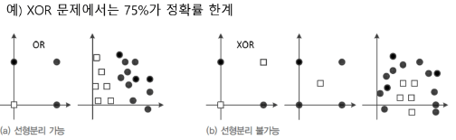
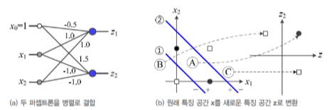
활성 함수
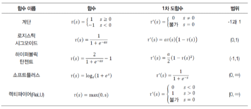
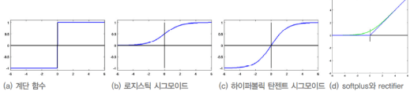
손실 함수
MSE : Mean Squared Error
좋은 손실 함수는? 오차가 클 수록 e 값이 커야 한다.
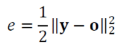
MSE는 오차가 클 수록 e 값이 크다.
하지만?
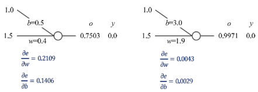
그래디언트가 계산되는 방식
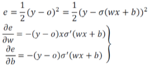
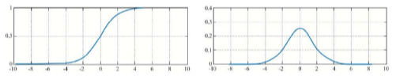
CE : Cross Entrophy
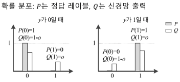
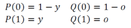
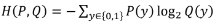
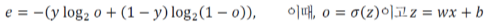
손실 함수는 오차가 클 수록 e 값이 커야 한다.
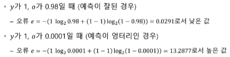
왜 CE는 이게 될까?
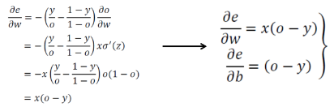
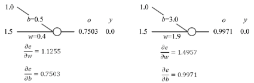
Overfitting / Underfitting
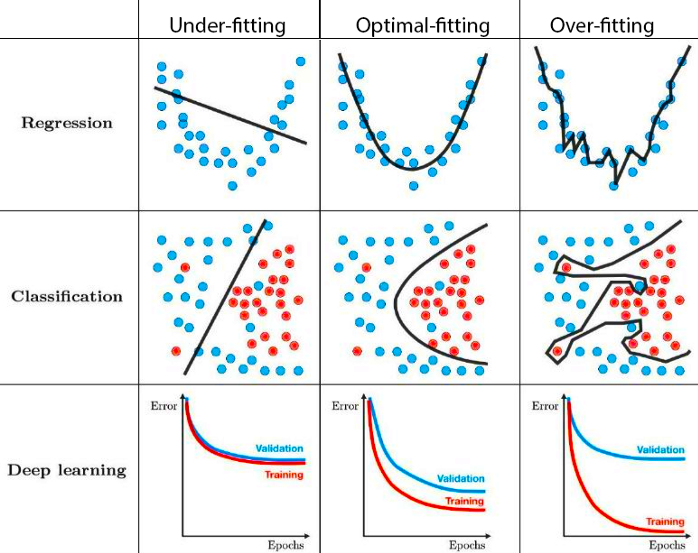
옵티마이저
http://www.denizyuret.com/2015/03/alec-radfords-animations-for.html
Alec Radford's animations for optimization algorithmsAlec Radford has created some great animations comparing optimization algorithms SGD , Momentum , NAG , Adagrad , Adadelta , RMSprop (unfo...www.denizyuret.com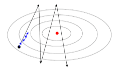
GD - SGD - Mini batch GD
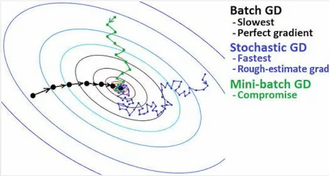
Momentum
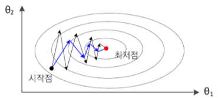
데이터 전처리
balance, size, augmentation(resize, brightness, contrast, saturation, crop)
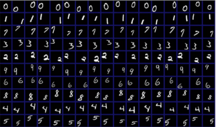
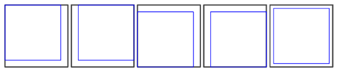
하이퍼 파라미터
모델의 외부에서 학습에 관련된 모델의 동작을 조정
레이어의 수, 노드의 수, 학습률, epoch, 모멘텀
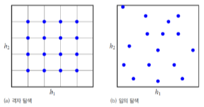
임의 탐색이 유리하다 (Bergstra2012 실험)
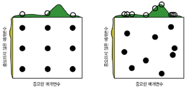